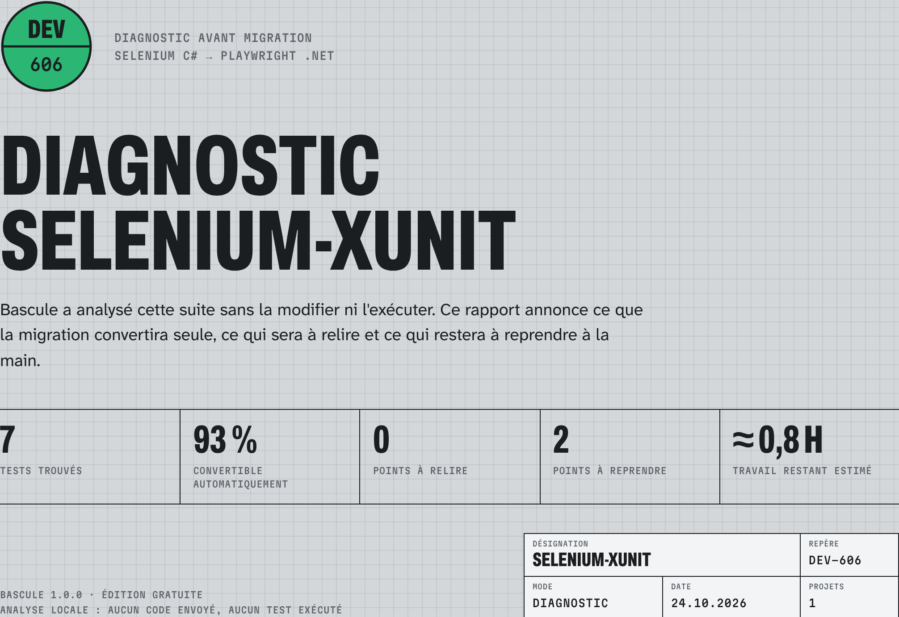
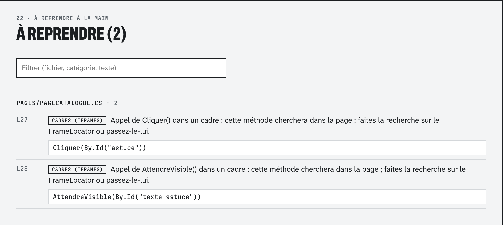

Bascule lit une suite de tests Selenium C# avec Roslyn et dit, fichier par fichier, ce qui se convertit tout seul, ce qui sera à relire et ce qui restera à reprendre. Hors ligne, sans compiler ni exécuter la suite.

# dans le dossier où vous avez téléchargé Bascule.1.0.0.nupkg dotnet tool install --global Bascule \ --version 1.0.0 --add-source . # dossier, .sln, .slnx ou .csproj bascule diagnostic MaSuite.sln bascule diagnostic ./tests/Projet.Tests --rapport ./audit
Ou depuis les sources : dotnet run --project src/Bascule -c Release -- diagnostic <chemin>. Empreinte du paquet dans SHA256SUMS.txt, à côté du téléchargement.
[FindsBy]), WebDriverManager.bascule-rapport.html (autonome, imprimable) et bascule-rapport.json.Ce que la migration réécrira sans changement de comportement attendu : sélecteurs, actions, lectures, attentes, cadres, alertes, cookies, scripts, assertions.
Converti, mais à vérifier : pause fixe gardée, couleur lue en rgb(), envoi de fichier, élément périmé.
Sans équivalent automatique : fenêtres par identifiant, script asynchrone, grille distante, Appium, cadre traversé par un utilitaire.

Le travail restant est estimé à 20 minutes par point à reprendre (5 quand il se répète dans le même fichier), 4 par point à relire et 1 par test pour la vérification : un ordre de grandeur, pas un devis.
Le JSON reprend les mêmes données, pour un tableau de bord ou pour suivre la migration dans le temps.
| Document | Contenu |
|---|---|
| Règles de conversion | Chaque usage de Selenium, son équivalent Playwright et son niveau |
| Résultats mesurés | Suites de démonstration et dépôts publics, diagnostic comparé à la migration |
| Questions fréquentes | Installation, confidentialité, async, attentes, licences |
| Rapport de migration (édition Pro) | La suite NUnit de démonstration réécrite : diff de chaque fichier, compilation |
| Journal des versions | Ce qui change d'une version à l'autre |
La réécriture automatique (bascule migrer) fait partie de l'édition Pro, et une migration faite pour vous existe au forfait : bascule.pages.dev.